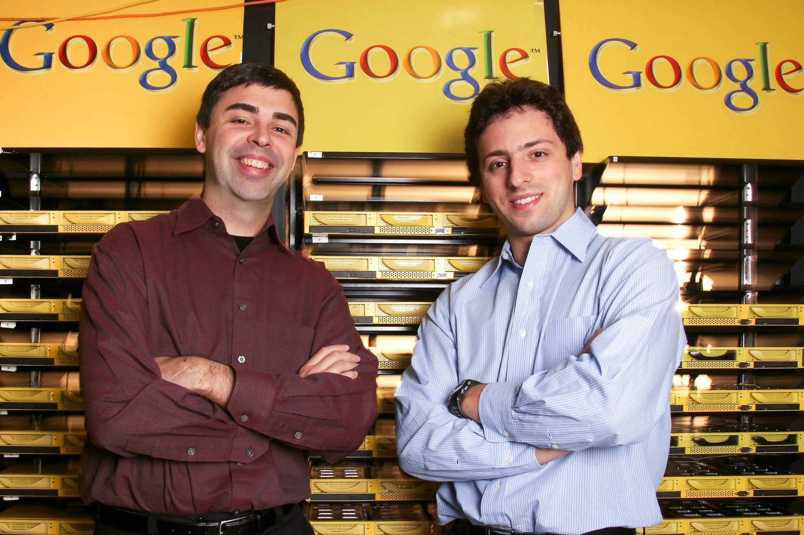

REFERENCES
-
Britannica Money. 9 Aug. 2024, www.britannica.com/money/Larry-Page.
-
Sergey Brin and Larry Page | Lemelson. lemelson.mit.edu/resources/sergey-brin-and-larry-page.
-
Hartmans, Jordan Hart Sam Tabahriti, Avery. “Sergey Brin’s Life and Career, From USSR Refugee to Billionaire Google Cofounder.” Business Insider, 12 Sept. 2024, www.businessinsider.com/sergey-brin-career-life-education.
-
Sarkar, Somdatta. Celebrating 25 Years of Google: A Journey of Innovation and Impact. 28 Sept. 2023, www.linkedin.com/pulse/celebrating-25-years-google-journey-innovation-impact-somdatta-sarkar#:~:text=A%20Culture%20of%20Innovation&text=Furthermore%2C%20Google%20has%20been%20at,continues%20to%20shape%20the%20future.
-
Battelle, John. “The Birth of Google.” WIRED, 1 Aug. 2005, www.wired.com/2005/08/battelle
-
Top 10 Business.in. “Alphabet Inc. - Top 10 Business.in - Medium.” Medium, 4 Jan. 2024, medium.com/@top10Business.in/alphabet-inc-f3fb4265e441.
-
Bellis, Mary. “The History of Google and How It Was Invented.” ThoughtCo, 29 Jan. 2020, www.thoughtco.com/who-invented-google-1991852.
-
Reid, Hunter. “Google.” Pressbooks, 29 July 2020, pressbooks.pub/anne1/chapter/google/#:~:text=Google%20revolutionized%20the%20search%20engine,impact%20on%20the%20world's%20economy.
-
“Larry Page.” Biography, 26 Mar. 2021, www.biography.com/business-leaders/larry-page.